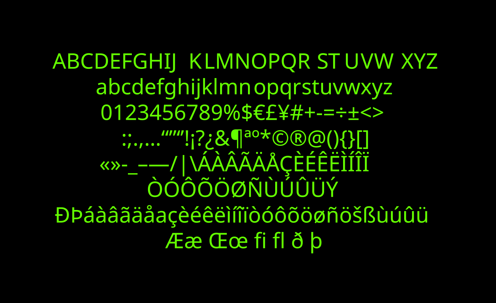

PORTFOLIO




I started out in Computer Engineering, then switched to Graphic Design and Multimedia, which I completed at ESAD.CR. That shift never erased the systems thinking I carry from engineering, and I find it useful. It shows up in my designs, from visual identity and branding to packaging and typography, and it gives me another way to perceive things.
That technical background is a real asset today. Understanding technology from the inside gives me the confidence to navigate this new era where design and AI increasingly overlap. I use AI tools as execution assistants: they speed up the process, but they never replace creative direction.
I'm determined and focused on whatever I set out to do, and that same technical rigour is what I bring to every project.
Outside work I split my time between piano, photography, drawing and 3D printing, more out of curiosity than as hobbies in the usual sense. I genuinely love learning new things, and that curiosity runs through everything I do, on and off the screen.
I'm certainly not the best designer out there, but I always give the best of myself in what I set out to do, even when I don't enjoy it.